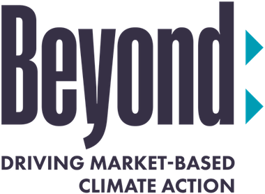

With support from:

Superpollutant Roadmap for Corporate Action
Superpollutants cause roughly half of today’s gross warming, yet they remain almost entirely absent from corporate climate targets. This roadmap sets out where the abatement sits, what it costs, and three levers for acting on it.
Executive
Summary
September 2026 · Carbon Containment Lab
Superpollutants—methane, fluorinated gases (F-gases), nitrous oxide, tropospheric ozone, and black carbon—are responsible for roughly half of today’s gross warming,1 and cutting them is the fastest and lowest-cost way to slow warming this coming decade.
Superpollutant mitigation is no longer optional, but necessary. The IPCC’s 2°C scenario assumes global superpollutant emissions fall by nearly 50 percent by 2050, representing about 142 Gt CO2e in cumulative avoided emissions, yet current trajectories keep these emissions essentially flat. That gap—between what targets call for and what is actually happening—is the opportunity. Closing it is the focus of this roadmap.
Corporations are positioned to close this gap as few other actors can. They are the largest source of catalytic private climate finance, hold procurement leverage over the supply chains where many of these emissions concentrate, and can make superpollutant action a market expectation rather than an exception or a coming policy driver.
Of today’s gross warming comes from superpollutants
CO2e of cumulative avoided emissions in the 2°C scenario
Mitigation measures cataloged, 60% mature and ready to scale
Superpollutant action can help stabilize the climate and avoid tipping points. Superpollutants are on par with carbon dioxide in that both are responsible for a nearly equal share of the warming reduction required to hold the planet below 2°C. Figure E1 presents projected global temperature outcomes through 2100 under the IPCC’s 2°C scenario. It compares the contribution of CO2 mitigation alone versus combined CO2 and superpollutant mitigation. Of the 0.9°C of warming separating the 2°C scenario from the business-as-usual case (reference case), approximately half is attributable to CO2 reductions, with the remaining half attributable to superpollutant reductions.
Cutting superpollutant emissions delivers rapid, near-term relief because most are short-lived in the atmosphere. A single ton of methane abated today has largely left the climate system within two decades—making it a uniquely fast acting lever.
Superpollutant action is a kickstart, not a substitute. Superpollutant action is an important complement to CO2 action that is essential for limiting the extent of warming. Burning fossil fuel emits reflective sulfate particles that act to cool the planet. The reduction in reflective particles resulting from lower fossil fuel use, an effect known as “unmasking,” is the reason the “CO2 only” curve in Figure E1 stays above the black line until 2060. Pairing superpollutant mitigation with decarbonization dampens this effect because most measures reduce warming without removing aerosol cooling.
This pairing creates an important sequencing opportunity. Rapid superpollutant abatement, achievable in low-cost, quick-turnaround interventions like leak repair and refrigerant management, will extend the scaling time needed for slower, capital-intensive CO2 reductions in heavy industry and infrastructure.
Figure E1: Projected temperature changes through 2100 resulting from reference scenario, 2 degrees C scenario with mitigation of CO2-only, and 2 degrees C scenario with mitigation of both CO2 and superpollutants
SOURCE: Carbon Containment Lab analysis with FaIR v.2.2.4
Reference Scenario
Without further mitigation, projected warming keeps climbing through 2100. This business-as-usual path is the reference case.
CO2 only 2°C Scenario
The CO2-only 2°C scenario bends the curve, yet runs above the reference line until about 2060. Burning less fossil fuel also removes reflective sulfate particles that had been cooling the planet, an effect known as unmasking.
CO2 + Superpollutants 2°C Scenario
Pairing decarbonization with superpollutant mitigation dampens unmasking, because most measures reduce warming without removing aerosol cooling. Warming levels off near 2°C.
The 0.9°C gap
Of the 0.9°C separating the 2°C scenario from the reference case, roughly half comes from CO2 reductions. The other half comes from cutting superpollutants.
Companies can—and must—be an important part of addressing these potent warmers worldwide. Companies with substantial superpollutant footprints must take responsibility and reduce them as quickly as possible. But even companies without large amounts of superpollutants in their value chains have opportunities to finance superpollutant elimination projects worldwide through the voluntary carbon market, investing in new facilities, R&D, and sharing best practices. It is vital that all companies take decisive action given the slow pace of government action and the prospect of reaching critical tipping points soon.
Companies are aware of these gases, yet few have committed to reducing them. A decade of corporate climate action has produced more than 10,000 science-based targets, 1,900 net-zero commitments—and very few superpollutant strategies. A review of 40 large companies in exposed sectors revealed a large majority mention superpollutants by name in their sustainability reporting, but just a small percentage follow through by setting targets. The story is similar across the corporate sector—a nearly exclusive focus on CO2 in most net zero portfolios has resulted in insufficient support and attention to superpollutant mitigation projects.
The accounting conventions that allowed this gap are closing. Superpollutants sit almost entirely in Scope 1—fugitive methane, refrigerant leakage, industrial F-gases, and nitrous oxide from chemical production—and Scope 3—agricultural, supplier, and waste emissions. This distinction is relevant because mitigation measures have stalled in Scopes 1 and 3, precisely where superpollutants tend to concentrate. Meanwhile, the latest Science Based Targets initiative (SBTi) Corporate Net-Zero Standard requires near-term Scope 1 targets to cover 100 percent of Scope 1 emissions, with no materiality carve-out and no more combining it with Scope 2. By early 2028, every large company with fugitive methane, refrigerant leakage, or industrial F-gas emissions will hold a stand-alone, fully covered Scope 1 target. The only question is how fast companies can move on superpollutants before that deadline arrives.
Superpollutant abatement is unusually cheap and remarkably reachable. A significant share of superpollutant abatement carries negative or low net cost, because the abated substance has commercial value or the intervention is a maintenance practice rather than a capital project.2 For example, about 39 percent of oil and gas methane abatement pays for itself outright and nearly all of the remainder is cost-effective below $20 per metric ton of CO2e.3 It is even cheaper per ton if you calculate it using GWP-20. Superpollutant emissions also tend to concentrate in identifiable point sources and equipment classes, such as wells and compressor stations, refrigeration and cooling systems, landfills, and nitric and adipic acid plants, rather than diffusing across every combustion process in an economy like for CO2. Sources that cannot be reached from inside a company’s value chain can be reached via voluntary carbon markets where prices are also low relative to other project types and can still be high quality.
Companies can pursue numerous opportunities and many proven pathways to make a difference. As part of this research, the Carbon Containment Lab cataloged 204 mitigation measures—and the list is growing. Many actions mitigate more than one superpollutant and some also abate CO2. 60 percent of these measures are mature and ready to scale up, some at a cost of less than $1 per ton or even provide net savings. Others requiring more investment are a natural fit for voluntary carbon markets meeting financial additionality requirements. Not every mitigation measure is equally ready; some require work on standards, methodologies or measurement. The most immediate and scalable opportunities lie where the sources are concentrated, the technology is proven, the cost is low, and additional finance can help scale up operations in the next five years.
Figure E2: 204 identified superpollutant mitigation measures by primary gas mitigated and measure maturity level
SOURCE: Carbon Containment Lab, 2026
204 measures, six maturity levels
The Carbon Containment Lab cataloged 204 mitigation measures and placed each on a maturity scale, from early concept and research to full system integration.
Five gas families
Sorted by the primary gas each one targets, the catalog reaches every superpollutant family. Many measures mitigate more than one, and some also abate CO2.
Ready to scale
60 percent of measures sit at levels 5 and 6: mature and ready to scale up, some at a cost of less than $1 per ton or even a net saving.
Still maturing
Not every measure is equally ready. Some require work on standards, methodologies, or measurement before they can scale.
Companies are finding ways to finance a range of mitigation measures—mechanisms include the use of market-based instruments such as insetting, environmental attribute certificates, or carbon credits. Companies are also claiming the emission reductions against their target or as part of a broader contribution or compensation claim.
In addition, superpollutant co-benefits are already found in decarbonization strategies familiar to companies. Sustainable aviation fuel, greener cement and concrete, and transitioning fleets to battery electric vehicles all have notable superpollutant co-benefits, such as reducing black carbon, nitrous oxide, and tropospheric ozone precursors like volatile organic compounds (VOCs).
Table E1 highlights a few select mitigation measures that are uniquely suited for near-term corporate action with high scalability potential.
Table E1: Priority superpollutant project types and the mechanisms to support them
| Project Type | Superpollutants Mitigated | Mechanism | Status |
|---|---|---|---|
| Biomethane from Manure Lagoons/ Anaerobic Digesters | Methane, Nitrous Oxide | Renewable Natural Gas (RNG) certificates; Spot or Forward purchase of carbon credits | Ready for expansion |
| Landfill Gas Capture & Destruction | Methane | Spot or Forward purchase of carbon credits | Ready for expansion |
| Lifecycle Refrigerant Management | F-Gases (various) | Spot or Forward purchase of reclaimed gas; and/or carbon credits supporting leak detection & repair or destruction. | Ready for expansion |
| Rice Methane Mitigation | Methane | Spot or Forward purchase of carbon credits/Environmental Attribute Certificate (EAC) | Gain more MRV experience with deployments |
| Plugging Orphaned Oil & Gas Wells | Methane | Spot or Forward purchase of carbon credits | Resolve key measurement and methodology issues |
| Industrial N2O | Nitrous Oxide | Spot or Forward purchase of carbon credits | Resolve key methodology additionality issues |
Three levers, one strategy. This roadmap organizes corporate action into three reinforcing levers that reinforce the broader climate commitments companies have already made:
-
Lever 1:
Value Chain Intervention
Reducing superpollutant emissions within a company’s own operations and value chain.
-
Lever 2:
Voluntary Carbon Markets
Financing verified superpollutant mitigation beyond the value chain through high-integrity carbon credits.
-
Lever 3:
Policy Engagement
Supporting the policies and regulatory frameworks that make value chain and market action durable and widespread.
Early movers show action is a matter of choice, not capability. They help write the standards and lock in the lowest-cost abatement; those who wait inherit rules written by others and pay more to meet them. In every sector we reviewed, a small group of companies has taken serious action. Danone has committed to cut methane from its fresh-milk supply chain by 30 percent by 2030.4 ALDI is converting its U.S. store network to natural refrigerants.5 Apple has secured commitments from semiconductor suppliers to abate at least 90 percent of F-gas emissions by 2030.6 Workday has signed a four-year offtake agreement to plug orphaned oil and gas wells.7 In March 2026, seven companies with the Beyond Alliance—Amazon, Autodesk, Figma, Google, JPMorgan Chase, Salesforce, and Workday—launched the Superpollutant Action Initiative, committing $100 million through 2030 to projects that would not otherwise be financed.8 More announcements are made every day, and the category is growing quickly.
The window is now. Actions to mitigate superpollutants are a powerful confluence of urgent, immediately available, cost-effective, and fast-acting. The technologies, methods, and markets exist today; what they need is capital and corporate demand at scale. Superpollutant Roadmap for Corporate Action highlights existing abatement opportunities, their cost, and how companies can pursue them through each of the three levers.
The Carbon Containment Lab invites companies to act decisively and treat superpollutants not as a footnote to their climate strategy but as its fastest-moving front.
Endnotes
- “Super Pollutants” Climate & Clean Air Coalition, 22 July 2024. www.ccacoalition.org/news/super-pollutants. ↩
- International Energy Agency, “Global Methane Tracker 2025: Methane Abatement Costs in the Energy Sector,” IEA, https://www.iea.org/reports/global-methane-tracker-2025. ↩
- Ibid. ↩
- Chris Casey, “Danone Commits to 30% Methane Reduction from Milk Supply by 2030,” Food Dive, January 17, 2023, https://www.fooddive.com/news/danone-methane-30-percent-2030-dairy-regenerative-environmental-defense-fund/640534/. ↩
- Environmental Investigation Agency, “ALDI Becomes First U.S. Food Retailer to Commit to Natural Refrigerants Across All Stores,” January 11, 2024, https://eia.org/blog/aldi-becomes-first-u-s-food-retailer-to-commit-to-natural-refrigerants-across-all-stores/. ↩
- Apple Inc., “Apple Unveils Environmental Progress, Surpassing 60 Percent Reduction in Global Greenhouse Gas Emissions,” Apple Newsroom, April 16, 2025, https://www.apple.com/newsroom/2025/04/apple-surpasses-60-percent-reduction-in-global-greenhouse-gas-emissions/. ↩
- Heather Clancy, “Why Office Software Vendor Workday Is Paying to Plug ‘Orphaned’ Oil and Gas Wells,” Trellis, December 13, 2024, https://trellis.net/article/workday-tradewater-deal-addresses-methane-emissions/. ↩
- Carbon Containment Lab, “Announcing Our Partnership with Beyond Alliance to Develop a Global Corporate Roadmap on Superpollutant Action,” March 3, 2026, https://carboncontainmentlab.org/updates/posts/superpollutant-roadmap. ↩
Mitigation
Measures
200+ measures · Appendix B
The Superpollutant Mitigation Measures Catalogue: 200+ ways to cut methane, HFCs, black carbon, N2O, and tropospheric ozone.
Superpollutants drive roughly half of today’s warming, yet the solutions to cut them are scattered across dozens of technical reports, methodologies, and pilot projects. To help shine light on these important climate solutions, the CC Lab team identified, compiled, and organized over 200 superpollutant mitigation measures into a single, structured database. Measures are classified by primary superpollutant gas affected, source type, whether there are enabling standards in the Voluntary Carbon Market (VCM), or value chain emissions mitigation areas. We also indicate the level of maturity of these pathways in terms of how ready each is for deployment today.
Table of
Contents
136 pages · six chapters · six appendices
What’s in the full report.
Page numbers refer to the PDF edition. Chapters 01 through 03 set out what superpollutants are, where corporate action stands today, and the climate case for moving. Chapters 04 through 06 work through the three levers in turn.
-
- Acknowledgments2
- Executive Summary5
- Foreword11
- Introduction12
-
What Are Superpollutants?14
- Methane18
- Nitrous Oxide20
- Ozone-Depleting Substances and F-gases22
- Tropospheric Ozone25
- Black Carbon26
-
The State of Corporate Superpollutant Action28
- Companies are naming the gases without setting goals against them30
- The gap persists for reasons specific to superpollutants32
- Changing rules are impacting superpollutant footprints33
- Pathfinder companies show moving from awareness to action is a matter of choice34
- Implications for corporate strategy36
-
The Climate Case for Superpollutant Action37
- The pathway to 2°C assumes deep superpollutant reductions by 205039
- Reducing warming in the near-term requires cutting superpollutants41
- Implications for corporate strategy43
-
Lever 1: Value Chain Intervention45
- Finding superpollutant hotspots47
- Three mechanisms for action50
- Finding corporate superpollutant hotspots52
- A decision framework for action53
- Seeing mitigation in action: Value chain project examples59
-
Lever 2: Voluntary Carbon Markets63
- Why Superpollutant Credits Are Different66
- Where to Start: A Ladder, Not a Menu71
- Selection: What to Look for in Superpollutant Credits73
-
Lever 3: Policy Engagement77
- Superpollutant policy landscape today80
- Corporate action in superpollutant policy82
-
- Conclusion85
- Endnotes86
- Appendix ARadiative Forcing and GWP Values at 20 and 100 Years96
- Appendix BSelecting Superpollutant Measures100
- Appendix CModeling Parameters for Chapter 3105
- Appendix DCriteria for Selecting Market-Based Value-Chain Interventions107
- Appendix ESelecting Carbon Credits: Criteria and Application110
- Appendix FCarbon Credit Case Studies116
- Industrial N2O Abatement117
- ODS and HFC Destruction119
- Rice Methane Mitigation121
- Anaerobic Digesters123
- Landfill Gas Capture, Destruction, and Utilization125
- Plugging Orphaned Oil and Gas Wells127
- Appendix Endnotes129
Acknowledgments
Carbon Containment Lab:
Authors: Anastasia O’Rourke, John Nixon, Öznur Öztürk, Sinéad Crotty, Drew Pomerantz, Jack Lowenthal, and Dean Takahashi.
With support from: Puneet Chhabra, Justin Freiberg, Isabella Garrioch, Nicole Gotthardt, Selin Gören, Leslie Guerra, Chi Nguyen, Ethan Olim, Violet Dorsey-Reyes, and Olivia Rhodes.
Copyrights and Citation © 2026 Carbon Containment Lab. This work is licensed under a Creative Commons Attribution 4.0 International License (CC BY 4.0). You are free to share, copy, and adapt this material for any purpose, provided appropriate credit is given. To view a copy of this license, visit https://creativecommons.org/licenses/by/4.0/.
The views expressed in this paper are those of the authors and do not necessarily reflect the positions of Beyond Alliance, or any of the individuals and organizations acknowledged herein.
Suggested Citation: O’Rourke, A., Nixon, J., Öztürk, Ö., Crotty, S., Pomerantz, D., Lowenthal, J., Takahashi, D. (2026). Superpollutant Roadmap for Corporate Action. Carbon Containment Lab. Published September 23, 2026. https://www.superpollutantroadmap.org
Special Thanks:
Audrey Parker (MIT), Dr. Mary Kate Mitchell Lane (MIT), and Prof. Desirée Plata (MIT) and the attendees of their “Financing the Voluntary Carbon Market at Scale: Opportunities in Superpollutants” conference session.
Industrial Economics, Inc. which contributed to the value-chain chapter—Angela Vitulli, Diego Castillo, Tessa Lee, Sulagna Datta, and Kaitlyn DeGroot.
Mitigation Measures Catalogue Contributors:
- Anastasia O’Rourke – Senior Managing Director, CC Lab
- Nicole Gotthardt – Analyst, CC Lab
- Olivia Rhodes – Independent Consultant
- Berta Lascuevas Laguna – Associate, CC Lab
- Justin Freiberg – Managing Director, CC Lab
- Drew Pomerantz – Director, CC Lab
Advisory Council:
This roadmap benefited from the expert consultative input of an Advisory Council helping the authors think through core scientific, economic, policy, and implementation issues. We are grateful for their time and talents. Their participation in our process does not imply their or their organization’s endorsement of the resulting work. Responsibility for this roadmap’s content and recommendations rests solely with Carbon Containment Lab.
- Alex Kats-Rubin – Amazon
- Beth Trask – Rainier Climate
- Chris Costello – Environmental Defense Fund
- Claire Henly – Super Pollutant Action Alliance
- Donna Lee – Calyx Global
- Gabrielle Dreyfus – Institute for Governance & Sustainable Development
- Ilissa Ocko – Spark Climate Solutions
- Jessica Seddon – Yale University
- Lauren Frisch – Independent Expert
- Luke Pritchard – Beyond Alliance
- Marcelo Mena – Global Methane Hub
- Nathan Borgford-Parnell – Climate and Clean Air Coalition
- Randy Spock – Google
- Rick Duke – Gigaton Strategies
- Yannish Naik – Clean Air Fund
Editing and Production:
LEFF Scott Leff, Clairissa Myatt, Katie Parry, and Laura Brown
The full report
© 2026 Carbon Containment Lab
Superpollutant Roadmap for Corporate Action
September 2026